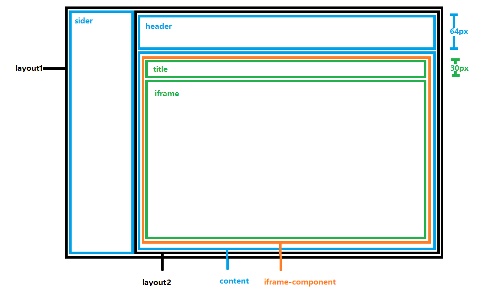

很多时候我们需要组件能够根据窗口变化改变宽高，有时候可以使用css,有时候需要随数据调整则使用js计算。
比如说，当我们在页面中放置一个iframe时，我们希望它的宽高随着其父元素or窗口的变化而变化；
再比如说，当我们引用一个ant Table组件，并且动态传入columns及dataSource时，由于需要控制sroll值我们需要获得动态的width和height；
......
下面我们举几个栗子
例1：使用antd layout布局，如下图，content宽高会随着窗口变化，我们希望iframe-component组件也随之变化，以至于iframe高度超出时iframe显示滚动条，该怎么写呢？

我们知道layout是flex布局，所以即使我们用下面的css也不能实现需求，因为content没有宽高，他的子元素使用height:100%起不到作用。
.iframe-component{
width:100%;
height:100%;
}
.iframe{
width:100%;
height:calc(100% - 30px);
}怎么办呢？我们可以使用vh单位给iframe-component设置宽高。这样iframe-component的高度就永远等于窗口的高度减去header的高度了
.iframe-component{
width:100%;
height:calc(100vh - 64px);
}
.iframe{
width:100%;
height:calc(100% - 30px);
}解释：
单位vh :1vh等于视口高度的1%
例2：antd Table组件的scroll属性用来设置横向或纵向滚动，也可用于指定滚动区域的宽高，可以设置为像素值，百分比，true和‘max-content’。
现在需要实现一个Table，希望它布满整个父div，父div随窗口变化大小；当父div高度小于Table总高度时Table显示纵滚动条；当父div宽度小于Table总宽度时Table显示横滚动条，另外他的列是动态生成，即列数及宽度不定。
import {Table} from 'antd';
class MyTable extends React.Component {
constructor(props) {
super(props);
this.state = {
width: 0,
height: 1000,
}
this.myRef=React.createRef();
}
componentWillMount() {
this.widthReset(this.props.columns)
}
componentDidMount() {
this.handleResize();
window.addEventListener('resize', this.handleResize);
}
componentWillUnmount() {
window.removeEventListener('resize', this.handleResize);
}
//取父div的height
handleResize() {
const divHeight = this.myRef.current.clientHeight;
divHeight!=null && this.setState({height:divHeight})
}
componentWillReceiveProps(props){
this.widthReset(props.columns)
}
widthReset=(columns)=>{
let width=0;
columns.forEach((record)=>{
width+=record.width;
});
this.setState({width})
}
render() {
return (
<div className="table-div" >
<Table
columns={this.props.columns}
dataSource={this.props.dataSource}
style={{height:this.state.height}}
scroll={ { x: this.state.width, y: (this.state.height-this.columnHeight) } }
/>
</div>
);
}
}
ReactDOM.render(
<MyTable columns={columns} dataSource={dataSource}/>,
document.getElementById('root')
); 相关解释：
React的ref ：可以将ref绑定到 render() 输出的任何组件上，来获取相应的支撑实例。
Element.clientHeight ：这个属性是只读属性，对于没有定义CSS或者内联布局盒子的元素为0，否则，它是元素内部的高度(单位像素)，包含内边距，但不包括水平滚动条、边框和外边距。